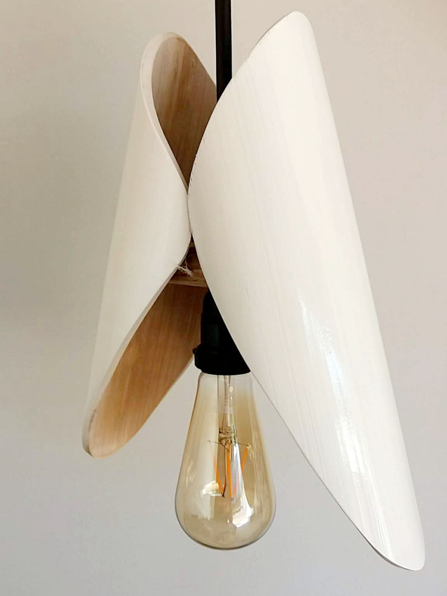
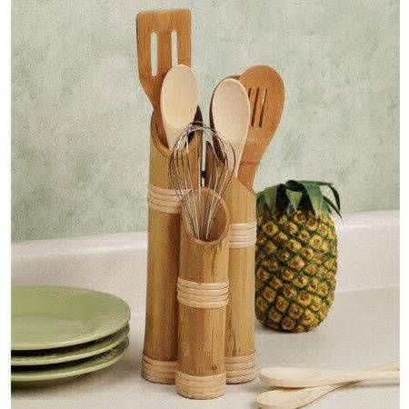
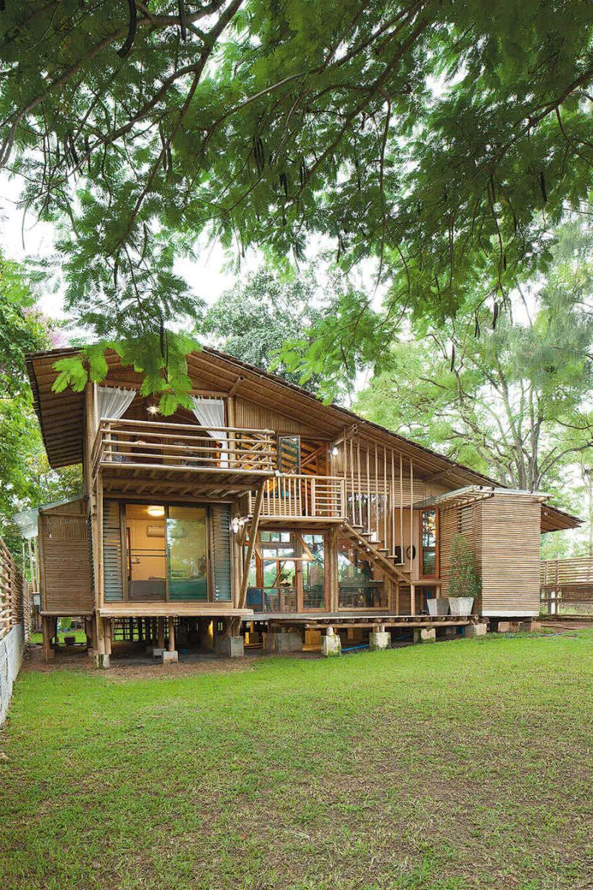
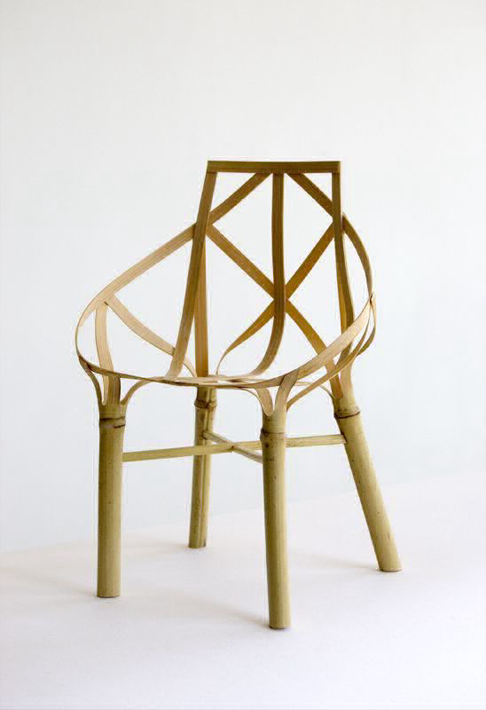
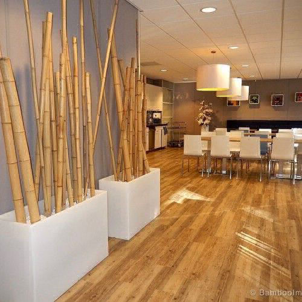
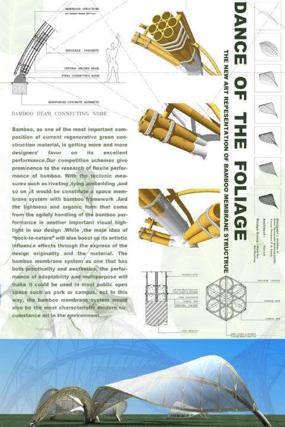
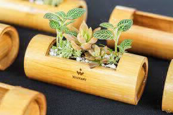
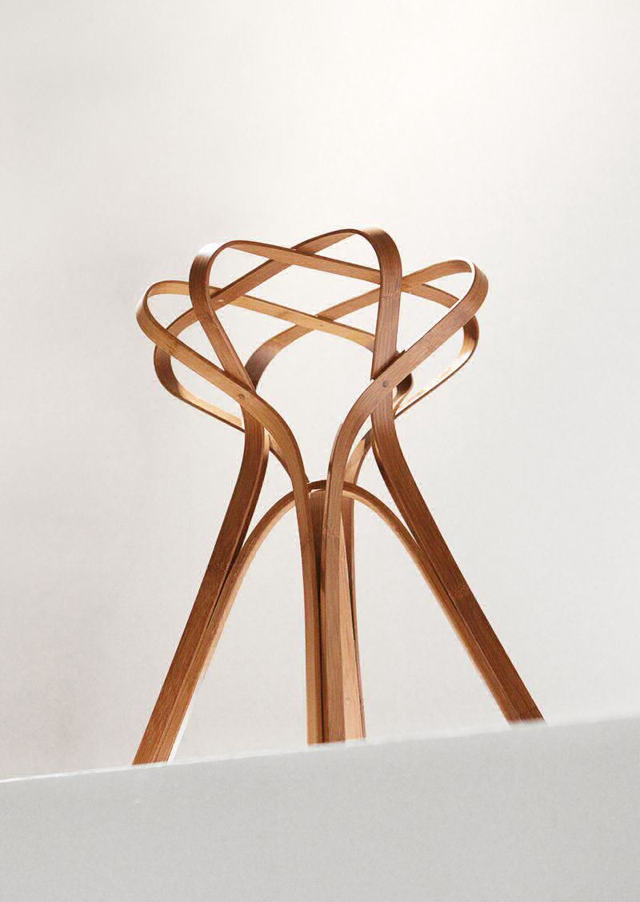
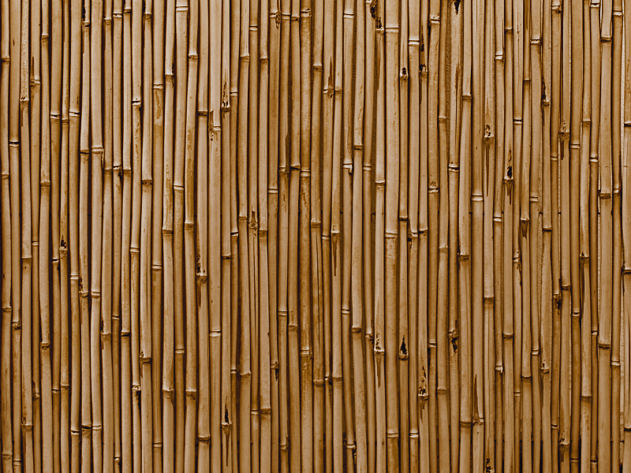

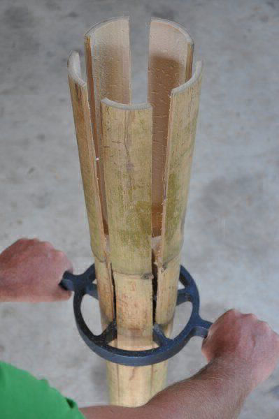
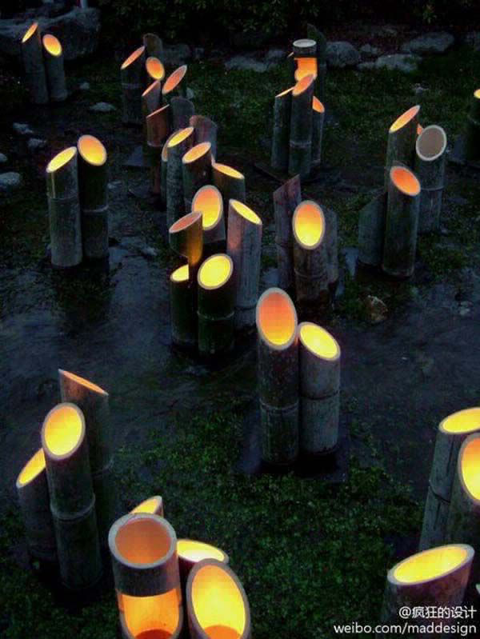
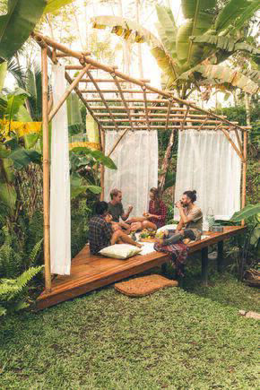
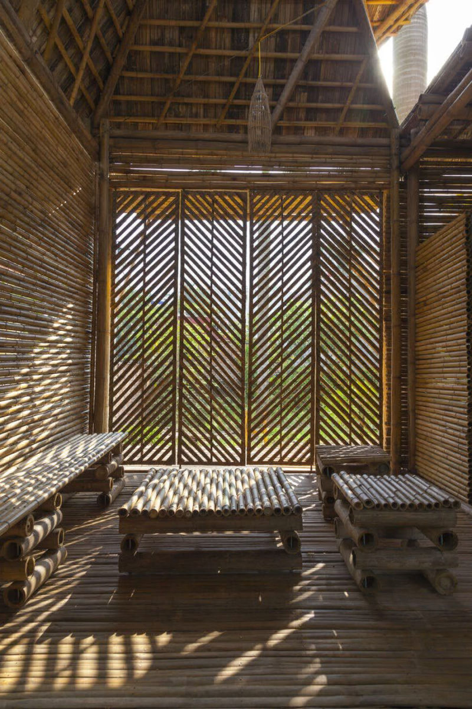
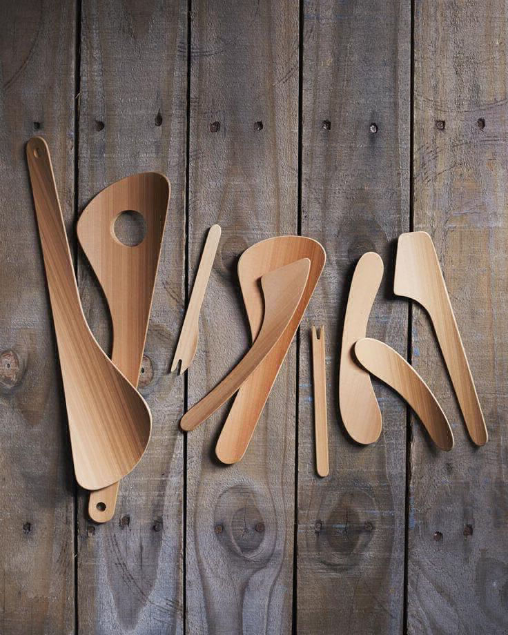
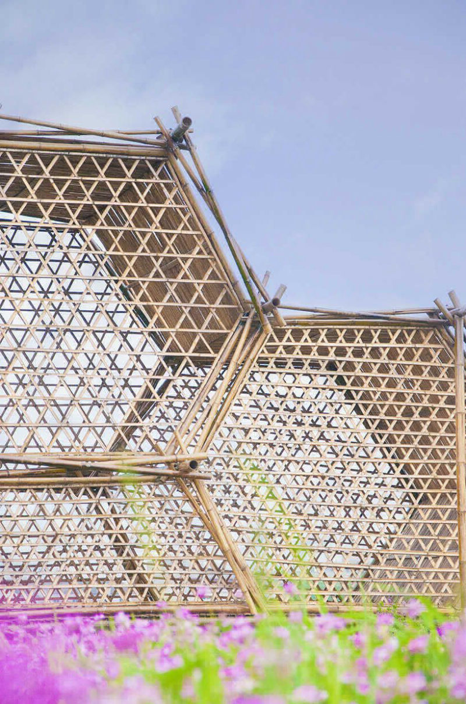
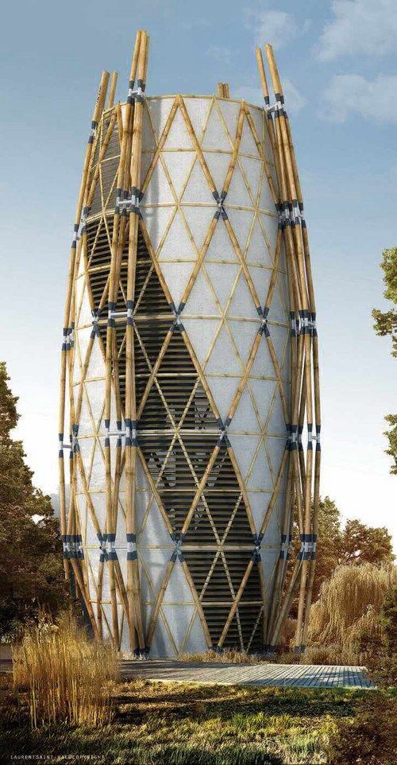
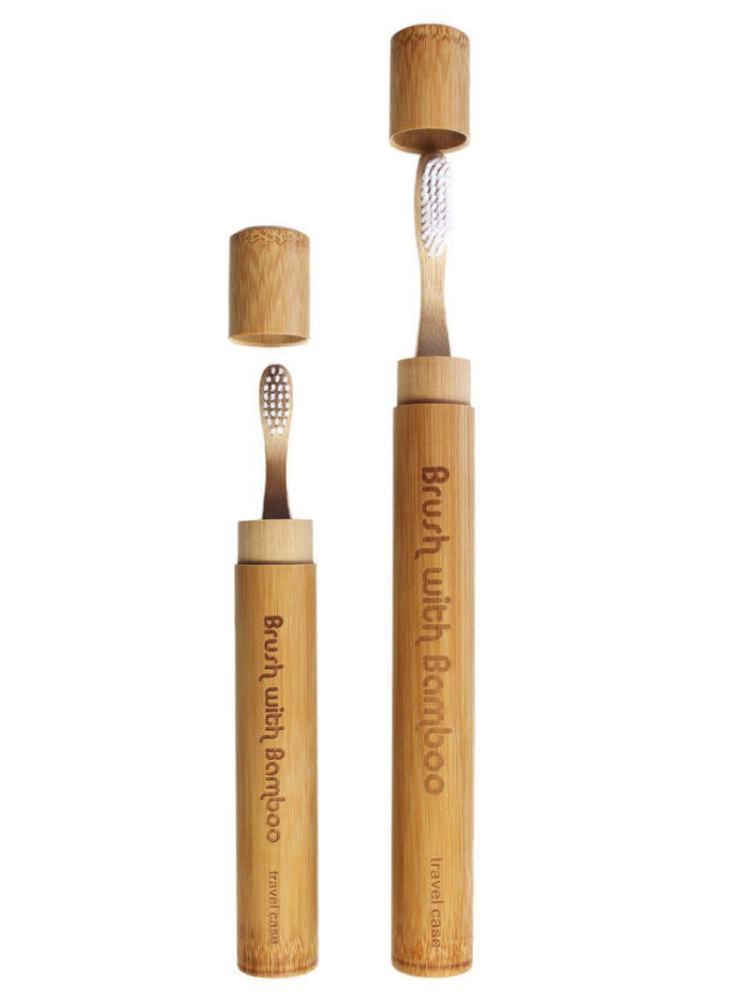
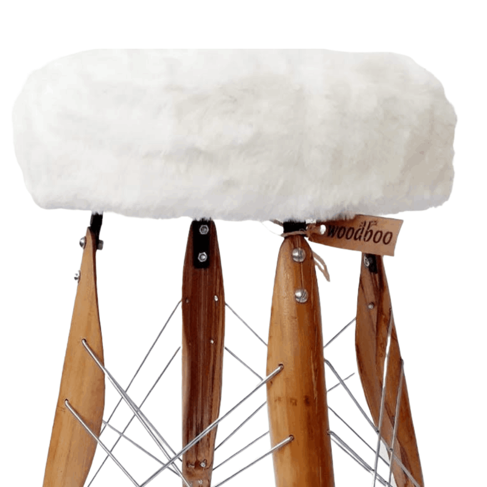
Sua vida pode transformar ao mudar seu jeito de agir e pensar!
Nos ensaios de resistência, o bambu se mostra mais adequado que a maior parte dos outros materiais, inclusive o concreto armado. Ele alcança essa resistência devido à sua estrutura tubular oca, um produto da evolução ao longo de milênios para resistir aos esforços do vento em seu habitat natural.
*Absorve bastante o CO2 da atmosfera.
*É resistente, flexível e leve, sendo um material de fácil transporte.
*O bambu tem um crescimento muito mais rápido do que as outras madeiras de corte, essa é a sua principal característica sustentável, porque facilmente renovável.
*O bambu além de ser um recurso renovável, substitui a madeira evitando a devastação das florestas.
*É um vegetal que se adapta em diversas regiões, desde a áridas até as úmidas, em áreas de baixas ou altas altitudes, por isso é de fácil cultivo.
*A planta do bambu contribui para diminuir o efeito estufa, pois, é um dos vegetais que mais libera oxigênio.
*É uma planta que cresce rápido e bastante (renovável).
*Como matéria-prima, o bambu é altamente aproveitável, pois, suas partes são utilizadas para diversos fins.
*O bambu é um material que tem diversas aplicações, tais como: móveis, artesanato, piso, papel, construção, paisagismo, carvão, decoração, tapeçaria, etc.